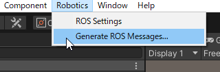
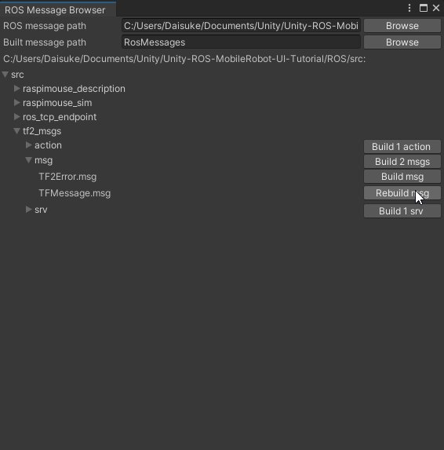
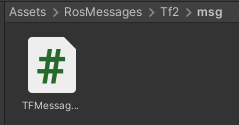

ロボット操作用ボタンの作成からUnityからGazebo上のロボットへ速度指令を送信するまでの手順を紹介します。
本ステップ実行後の状態のSceneファイルはMobileRobotUITutorialProject/Assets/Scenes/Step3.unityから入手できます。
パッケージマネージャからROS-TCP-Connectorをインストールします。パッケージマネージャはメニューバーのWindow -> Package Managerから開けます。
左上の＋ボタンからAdd package from git URLをクリックします。
ROS-TCP-ConnectorのGitリポジトリへのURLを最新のタグを指定して入力し、Addをクリックします。2021年9月現在最新のタグはv0.5.0です。
この場合のGitリポジトリへのURLは https://github.com/Unity-Technologies/ROS-TCP-Connector.git?path=/com.unity.robotics.ros-tcp-connector#v0.5.0 となります。
メニューバーにRoboticsというメニューが追加されます。メニューバーからRobotics -> ROS Settingsを開き、以下の設定となっていることを確認します。

UnityでROSから配信されるロボットの位置姿勢を受信するために、配信されているメッセージの形式をUnityプロジェクトで扱えるようにします。 ROSで使われている定義ファイルをC#のスクリプトに変換します。
変換にはROS-TCP-Connectorのメッセージ作成機能を用います。
なお、この手順は今回のように使うROSのメッセージがROS-TCP-Connectorに予め含まれていない場合にのみ必要です。
（STEP3ではROS-TCP-Connectorに予め定義されているROSのメッセージ作成のみ使用しています。STEP4にて使用するメッセージを先に用意しておきます。）
com.unity.robotics.ros-tcp-connector/Runtime/Messagesから予めUnity用に用意されているROSのメッセージ形式を確認できます。
メニューバーからRobotics -> Generate ROS Messages...を選択します。

ROS message pathを指定します。
ROS/srcフォルダを指定します。

tf2_msgs/msg/TFMessage.msgを選択してBuild msgをクリックします。

以上でROSのメッセージファイル作成は完了です。Unityプロジェクト内のAssets/RosMessagesフォルダにTf2/msg/TFMessageMsg.csというスクリプトが作成されています。

Hierarchyウィンドウを右クリックしてUI->Panelを選択します。

InspectorウィンドウでPanelの位置とサイズを調整します。 PanelはGameウィンドウから確認することができます。
Rect Transformコンポーネント左上にある二重の四角をクリックすると
Panel位置を調整するためのAnchor Presetsが開くので右下寄せになるright-bottomを選択します。

Pos X, Pos Y, Pos Z, Width, Heightはそれぞれ-170, 170, 0, 320, 320にします。

次にHierarchyウィンドウでCanvas->Panelを右クリックしてUI->Buttonを選択し、ButtonForwardと名前をつけます。


InspectorウィンドウでButtonの位置とサイズを調整します。
Pos X, Pos Y, Pos Z, Width, Heightはそれぞれ0, 100, 0, 100, 100にします。

次にHierarchyウィンドウからButtonForwardオブジェクトの子のTextオブジェクトを選択し、Buttonのラベルを「Forward」に修正します。

同様にしてBackward, Left, Rightについても作成します。
| Button | Pos X | Pos Y | Pos Z | Width | Height | Text |
|---|---|---|---|---|---|---|
| ButtonForward | 0 | 100 | 0 | 100 | 100 | Foraward |
| ButtonBackward | 0 | -100 | 0 | 100 | 100 | Backward |
| ButtonLeft | -100 | 0 | 0 | 100 | 100 | Left |
| ButtonRight | 100 | 0 | 0 | 100 | 100 | Right |

次にHierarchyウィンドウを右クリックしてCreate Emptyを選択し、PublisherとしてGameObjectを作成します。


次に作成したボタンにイベントを登録します。
UnityScripts/ScriptsフォルダをUnityプロジェクトのAssetsフォルダにコピー（Assets/Scriptsとして配置）します。
コピーしたScriptsフォルダ内のCmdVelPublisher.csを先程作成したPublisherオブジェクトにコンポーネントとして追加します。

PublisherオブジェクトのInspectorウィンドウを確認するとCmd Vel Publisherスクリプトが追加されていることを確認できます。ここのLinear Velが進行方向の基準となる速度、Angular Velが旋回方向の基準となる角速度となっています。今回はそれぞれを0.5と1.5に設定します。速度の単位はm/s、角速度の単位はrad/sです。

ButtonForwardオブジェクトのInspectorウィンドウのAdd ComponentボタンからEvent Triggerコンポーネントを追加します。

Add New Event TypeからPointer Downイベントを追加します。

Pointer Downイベントのリストを2つに増やし、それぞれにPublisherオブジェクトを指定します。


追加したPointer Downイベントに上から順にCmdVelPublisher.SetForwardVelファンクションとCmdVelPublisher.Publishファンクションを指定します。
このときCmdVelPublisher.SetForwardVelファンクションの引数は1を指定します。
この引数がPublisherオブジェクトのInspectorウィンドウから確認できる基準速度、基準角速度にかける倍率です。
今回は進行方向の基準速度が0.5、倍率が1.0なので0.5m/sの移動指令を送信することになります。

同様にしてPointer UpイベントにCmdVelPublisher.SetStopVelとCmdVelPublisher.Publishファンクションを指定します。
このイベントを登録することでボタンを離したら移動指令を止める（押している間だけ移動指令を出す）ことができるようになります。

同様にして各ボタンに移動指令を送信のイベントを登録します。
繰り返しでイベントを登録する際にはコンポーネントを使いまわしすると楽です。
ButtonForwardオブジェクトのEvent TriggerコンポーネントのオプションからCopy Componentを選びます。

ButtonBackwardオブジェクトにEvent Triggerコンポーネントを追加し、オプションからPaste Component Valuesを選びます。

Pointer Downイベントの1つ目のファンクションをCmdVelPublisher.SetBackwardVelファンクションに変更します。

以上で2つ目のボタンへのイベント登録は完了です。
同様にしてButtonLeftオブジェクトとButtonRightオブジェクトにEvent Triggerコンポーネントを追加して設定をコピーし、
それぞれCmdVelPublisher.SetLeftTurnVelとCmdVelPublisher.SetRightTurnVelを指定します。
以上で4つのボタンへのイベントの登録が完了です。
PowerShellを起動してDockerコンテナを起動します。
docker run --rm -it -p 10000:10000 -p 5005:5005 -p 6080:80 --shm-size=512m raspimouse-unity:latest
以下のメッセージが表示されていればコンテナが無事起動できています。
Listening on http://localhost:6079 (run.py:87)

Webブラウザを開きhttp://127.0.0.1:6080にアクセスします。

Unityで再生ボタンを押し、再生モードでプロジェクトを実行します。

この状態で操作ボタンの動作確認をしてみます。ボタンを押すと左上のLast Message Sentの欄が更新されているのが確認できます。

この間以下のようなメッセージが出ますが、無視して問題ありません。
Connection to 127.0.0.1:10000 failed - System.Net.Sockets.SocketException (0x80004005): 対象のコンピューターによって拒否されたため、接続できませんでした。
先程まで開いていたWebブラウザでLXTerminalを2つ起動します。


1枚目のLXTerminalで以下のコマンドを実行します。
roslaunch raspimouse_gazebo raspimouse_with_cheeze_maze.launch
ブラウザ上の環境にコピー&ペーストする際は 画面右側の三角のアイコンをクリックし、 クリップボードアイコンを選択して表示されるテキストボックスに入力することでペーストできるようになります。

無事実行できると以下のようにシミュレータが起動します。

2枚目のLXTerminalで以下のコマンドを実行します。
roslaunch ros_tcp_endpoint endpoint.launch
再生モードのUnityでボタンを操作すると移動指令が送信され、Gazebo上のロボットが移動することを確認できます。

このとき、Unity上のロボットは動きません。Unity上のロボットもGazebo上のロボットにあわせて動かせるようにする方法は次のSTEP4にて紹介します。
ロボット操作用ボタンを作成し、UnityからGazebo上のロボットへ速度指令を送信できるようにする方法を紹介しました。さらに実際にGazebo上のロボットを動かすまでを紹介しました。
次はSTEP4でGazebo上のロボットの位置姿勢を可視化（Unity上に反映）する方法を紹介します。